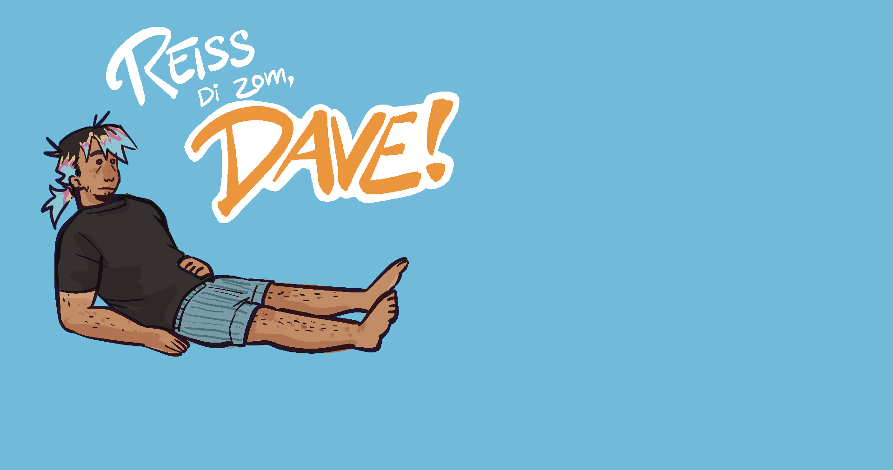

Index
“Reiss di zom Dave” was a university assignment focused on teaching us the basics of Unity. We worked in a team of 4. I pitched the concept & game mechanics, created concept art, created the soundtrack and made 2D assets. I also coded one of the minigames.

The game is about helping a young man suffering from depression and executive dysfunction clean his room. “Dave” is a ragdoll the player can drag around to do chores. The player has to manage his motivation meter and work on a to-do list before being able to finish the final task (sending off an email) and letting Dave leave his room.